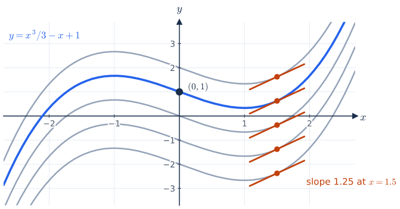
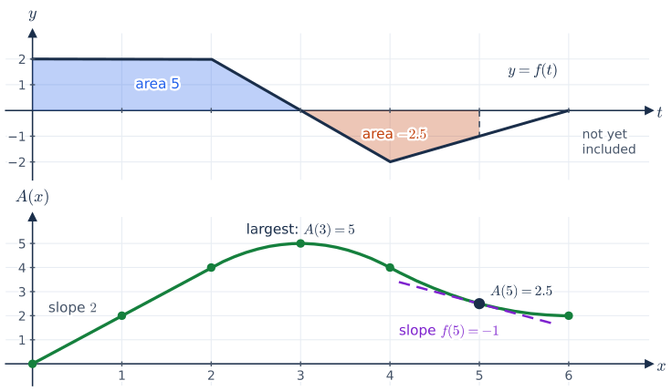
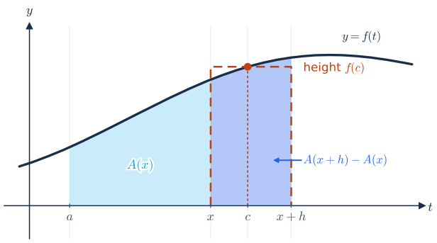
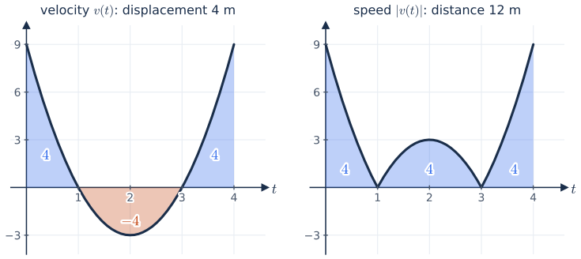
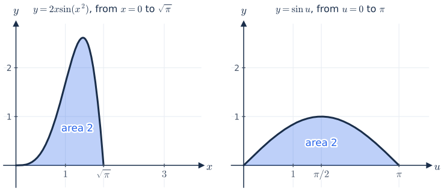

Connect the two halves of calculus. You will find functions from their derivatives, watch the area under a graph grow as its right end moves, prove that it grows at a rate equal to the height of the graph, evaluate integrals with antiderivatives instead of limits of sums, reverse the chain rule with substitution, and integrate with SymPy.
⏱ 255 minYou need: Modules 1 to 9, especially the chain rule (Module 5), the Mean Value Theorem and its consequences (Module 8) and the definite integral (Module 9)
In this module you will
Find antiderivatives with a table of basic ones, explain the constant C, and solve initial value problems such as finding position from velocity
Read the area function A(x)=∫axf(t)dt from a graph and from numbers, and say where it increases, decreases and is largest
State both parts of the Fundamental Theorem of Calculus with their hypotheses, prove them, and differentiate integrals whose limits vary
Evaluate definite integrals with antiderivatives, and use the net change theorem for displacement, distance travelled and accumulated amounts
Integrate by substitution, in indefinite and in definite integrals, changing the limits correctly
Integrate with SymPy, check an antiderivative by differentiating it, and explain answers that differ by a constant or use special functions
1
Antiderivatives
Module 4 started from a position and found a velocity: differentiate s(t) and you get v(t). Often the question runs the other way. A car’s speedometer records its velocity, and you want to know where the car is; a phone’s accelerometer measures acceleration, and the phone wants its velocity; a model says how fast a quantity changes, and you want the quantity itself. Each time you know a derivative and want the function it came from. This section and the next undo derivatives. The rest of the module shows that undoing a derivative is also the way to compute the areas of Module 9, and that this connection, the Fundamental Theorem of Calculus, joins the two halves of calculus into one subject.
Start with a guess. Which function has derivative 2x? You know one: x2, since (x2)′=2x. But x2+1 has derivative 2x too, and so do x2−7 and x2+π: the derivative of a constant is 0, so adding a constant changes nothing.
Definition 10.1Antiderivative
Let f be a function defined on an interval I. A function F is an antiderivative of f on I if F′(x)=f(x) for every x in I. (At an endpoint of I that belongs to I,F′ means the one-sided derivative of Module 4.)
So x2 is an antiderivative of 2x on R,sinx is an antiderivative of cosx,−cosx of sinx, and ex of itself. By Module 6, lnx is an antiderivative of 1/x on (0,∞).
Figure 10.1 shows the antiderivatives 31x3−x+C of f(x)=x2−1 for five values of the constant C. Adding a constant moves a graph up or down without tilting it, so at each x all these curves have the same slope, f(x): their tangent lines there are parallel.

Figure 10.1
The antiderivatives 31x3−x+C of f(x)=x2−1, for C=−2,−1,0,1,2 from bottom to top. Each curve is the one below it shifted up by 1, so at every x they have the same slope: at x=1.5 their tangent lines (orange) are parallel, with slope f(1.5)=1.25. Exactly one of them passes through the point (0,1): the blue one, with C=1 (Section 10.2).
Are there other antiderivatives, not of the form “one of them plus a constant”? No, as long as you stay on an interval.
Theorem 10.1The antiderivatives of a function
If F is an antiderivative of f on an interval I, then the antiderivatives of f on I are exactly the functions
F(x)+C,
where C is a constant.
Proof
For every constant C,(F+C)′=F′+0=f on I, so F+C is an antiderivative. Conversely, let G be any antiderivative of f on I, and let H=G−F, so that H′(x)=f(x)−f(x)=0 for every x in I. Module 8 proved that such a function is constant on an open interval (Theorem 8.5), and the same argument works on any interval. Take two numbers x1<x2 in I.H has a derivative at every point of [x1,x2] (a one-sided one at an endpoint of I), so it is continuous on [x1,x2] by Theorem 4.1, whose proof works from one side too. By the Mean Value Theorem, H(x2)−H(x1)=H′(c)(x2−x1)=0 for some c between x1 and x2. So H takes the same value C at every point of I:G=F+C.
∎
The function F(x)+C, with C standing for any constant, is the general antiderivative of f on I, and C is the constant of integration. The interval matters: the proof applies the Mean Value Theorem on [x1,x2], so all of [x1,x2] must lie in I. The function 1/x is defined on (−∞,0)∪(0,∞), which is not an interval. Module 6 showed that dxdln∣x∣=x1 for every x=0, so on each half the antiderivatives are ln∣x∣+C. But the function equal to ln∣x∣ for x>0 and to ln∣x∣+5 for x<0 also has derivative 1/x at every x=0, and it is not ln∣x∣+C for any single constant C: the constant may differ from one interval to the other. And since 1/x is not defined at 0, no antiderivative of it reaches across 0; Section 10.5 shows what that means for integrals.
A table of antiderivatives
Each rule of differentiation, read backwards, gives an antiderivative. In the table, the derivative of each entry in the middle column is the entry on its left; to get the general antiderivative, add C, on each interval where the formula holds.
f(x)
An antiderivative F(x)
Where
xn,n=−1
n+1xn+1
see below
x1
ln∣x∣
x=0
ex
ex
ekx,k=0
kekx
ax,a>0,a=1
lnaax
sinx
−cosx
cosx
sinx
sinkx,k=0
−kcoskx
coskx,k=0
ksinkx
sec2x
tanx
cosx=0
csc2x
−cotx
sinx=0
secxtanx
secx
cosx=0
cscxcotx
−cscx
sinx=0
1+x21
arctanx
1−x21
arcsinx
−1<x<1
sinhx
coshx
coshx
sinhx
The first row, the power rule for antiderivatives, holds on (0,∞) for every real n=−1. When n is an integer it holds for negative x as well, and for n=0,1,2,… on all of R. In words: raise the power by 1 and divide by the new power. For n=−1 it would divide by 0; the second row takes its place. The rows with k follow from the chain rule (Module 5): dxdkekx=kkekx=ekx. The derivatives behind the other rows are those of Modules 4 to 6.
Two rules of Module 4 carry over. If F and G are antiderivatives of f and g on an interval, and c is a constant, then cF is an antiderivative of cf, and F+G of f+g, because (cF+G)′=cF′+G′=cf+g. So you can find antiderivatives term by term, keeping constant factors.
Example 10.1Antiderivatives from the table✓ Checked
Find the general antiderivative of each function.
(a) f(x)=6x2−4x+5
(b) g(x)=3x−x22, for x>0
(c) h(t)=4e2t−3cost
(d) q(x)=x(x+1)2, for x=0
(a) Term by term, raising each power by 1 and dividing by the new power: 6⋅3x3−4⋅2x2+5x, so the general antiderivative is 2x3−2x2+5x+C.
(b) First write the terms as powers: g(x)=3x1/2−2x−2. The power rule gives
3⋅3/2x3/2−2⋅−1x−1=2x3/2+x2,
so the general antiderivative is 2x3/2+x2+C on (0,∞).
(c) With k=2 in the table, 4⋅2e2t=2e2t; and −3cost gives −3sint. The answer is 2e2t−3sint+C.
(d) There is no rule for quotients, so expand and divide each term by x first: xx2+2x+1=x+2+x1. The general antiderivative is 2x2+2x+ln∣x∣+C on (0,∞), and the same formula, with a constant that may differ, on (−∞,0).
Check every answer by differentiating it. For (b): dxd(2x3/2+2x−1)=3x1/2−2x−2, which is g(x).
Tip
Differentiating is easier than undoing a derivative, so always check an antiderivative by differentiating it. It takes a few seconds and catches almost every slip.
Watch out
Three slips. (1) The power rule backwards raises the power and divides: an antiderivative of x3 is 41x4, not 3x2 (that is the derivative) and not x4 (whose derivative is 4x3).(2) There is no product rule for antiderivatives: an antiderivative of xcosx is not 21x2sinx, whose derivative is xsinx+21x2cosx. Module 11 integrates such products; Section 10.7 handles products in which one factor is the derivative of something inside the other. (3) “+C” is part of the answer when you are asked for all antiderivatives, and on a domain made of several intervals, such as x=0, the constant may differ on each.
2
Initial value problems
Figure 10.1 shows how to pick one antiderivative out of the family: ask for the one whose graph passes through a given point. Of the curves 31x3−x+C, only the one with C=1 passes through (0,1).
Definition 10.2Initial value problem
An initial value problem asks for a function y=F(x) with
F′(x)=f(x) for every x in I,F(x0)=y0,
where I is an interval, x0 a point of I and y0 a number. The equation F′=f is the simplest kind of differential equation, an equation for an unknown function that involves its derivative, and F(x0)=y0 is the initial condition.
If f has an antiderivative G on I, the problem has exactly one solution. By Theorem 10.1 every solution has the form G+C; the initial condition says G(x0)+C=y0, so C=y0−G(x0), and the solution is
F(x)=G(x)−G(x0)+y0.
To solve one: find the general antiderivative, put in the initial condition, and solve for C. Module 13 studies differential equations in which the derivative depends on the unknown function as well, such as y′=ky.
Example 10.2An initial value problem✓ Checked
Find the function F with F′(x)=3x−x22 for x>0 and F(1)=5.
By Example 10.1(b), the general antiderivative is F(x)=2x3/2+x2+C. The initial condition gives
F(1)=2+2+C=4+C=5,
so C=1 and
F(x)=2x3/2+x2+1,x>0.
Check: F(1)=2+2+1=5, and F′ is the given function, as Example 10.1 showed.
Motion is the classic source of initial value problems: velocity is the derivative of position and acceleration the derivative of velocity (Module 4), so from the acceleration and two initial conditions you recover the whole motion.
Example 10.3The falling ball again✓ Checked
Module 1 took the distance fallen by a dropped ball, s(t)=4.9t2 metres, as given. Derive it. Measure distances downwards from the point of release. Near the Earth’s surface, with air resistance negligible, the ball’s acceleration is constant, a(t)=9.8 m/s², and it is released from rest: v(0)=0 and s(0)=0.
(a) Find the velocity v(t) and the distance fallen s(t).
(b) A ball is thrown straight up at 14.7 m/s from 1.5 m above the ground. With heights y measured upwards, find y(t).
(a) The velocity is an antiderivative of the acceleration: v(t)=9.8t+C1. The condition v(0)=0 gives C1=0, so v(t)=9.8t. The position is an antiderivative of the velocity: s(t)=4.9t2+C2, and s(0)=0 gives C2=0. So
s(t)=4.9t2,
the formula of Module 1, now derived from one physical fact: the acceleration is constant.
(b) Heights are measured upwards and gravity pulls down, so a(t)=−9.8. Then v(t)=−9.8t+C1, and v(0)=14.7 gives C1=14.7. Next y(t)=−4.9t2+14.7t+C2, and y(0)=1.5 gives C2=1.5:
y(t)=1.5+14.7t−4.9t2,
the height that Exercise 4.7 differentiated. In general, an object with constant acceleration a, initial velocity v0 and initial position s0 has position s(t)=s0+v0t+21at2.
Watch out
Two slips with initial value problems. (1) Each antidifferentiation brings its own constant. In Example 10.3 the velocity needs C1, fixed by v(0), and the position needs C2, fixed by s(0); dropping C1 loses the initial velocity. (2)C is not always the initial value. If s′(t)=sint and s(0)=0, then s(t)=−cost+C and s(0)=−1+C=0, so C=1 and s(t)=1−cost; setting C=0 would give s(0)=−1. Put the condition into the whole antiderivative, then solve for C.
3
The area function
Module 9 defined the definite integral ∫abf(x)dx as the limit of the Riemann sums ∑f(xi∗)Δxi as the norm of the partition, the width of its widest subinterval, shrinks to 0; when f is continuous on [a,b], the limit exists, and f is integrable. Where f is positive, the integral is the area between its graph and the x-axis; where f is negative, that area counts as negative, so the integral is a signed area. This module uses these properties from Module 9:
∫aaf(x)dx=0 and ∫baf(x)dx=−∫abf(x)dx;
splitting: ∫acf(x)dx=∫abf(x)dx+∫bcf(x)dx, for a,b and c in any order, when f is integrable on a closed interval that contains all three;
bounds: if a<b and m≤f(x)≤M for a≤x≤b, then m(b−a)≤∫abf(x)dx≤M(b−a);
the Mean Value Theorem for integrals: if f is continuous on [a,b], where a<b, there is a number c in [a,b] with ∫abf(x)dx=f(c)(b−a).
Now keep the left end fixed and let the right end move.
Definition 10.3The area function
Let I be an interval, let f be integrable on every closed interval inside I (as it is when f is continuous on I), and let a be a point of I. The area function of f from a is
A(x)=∫axf(t)dt,x in I.
Read it as “A of x is the integral from a to x of f of t, d t”. It is also called the accumulation function: as x moves right, A(x) accumulates the signed area under f. For x<a the integral runs backwards, A(x)=−∫xaf(t)dt. As in Module 9, the letter t is a dummy variable: ∫axf(t)dt and ∫axf(s)ds are the same number, as a sum ∑i=1ni2 does not depend on the name i. Writing ∫axf(x)dx would make x mean two things at once, the right end and the variable that runs from a to it, so the variable gets another name.

Figure 10.2
The function f of Example 10.4, made of straight pieces (top), and its area function A(x)=∫0xf(t)dt (bottom). The area from 0 to 5 is shaded, blue where f>0 (it counts as positive) and orange where f<0 (negative), so A(5)=5−2.5=2.5.A rises while f is positive and falls while f is negative; it is largest at x=3, where f changes sign. The dashed line, the tangent to the graph of A at x=5, has slope f(5)=−1.
Example 10.4Reading an area function✓ Checked
Let f be the function of Figure 10.2,
f(t)=⎩⎨⎧26−2tt−6if 0≤t≤2,if 2<t≤4,if 4<t≤6,
and let A(x)=∫0xf(t)dt for 0≤x≤6.
(a) Find A(x) for x=0,1,2,…,6.
(b) Where is A increasing, where is it decreasing, and where is it largest?
(c) Compare the slope of the graph of A with the height of the graph of f.
(a) The regions are rectangles, triangles and trapezoids. A(0)=0. On [0,2],f=2, so A(1)=2 and A(2)=4. From 2 to 3, f falls from 2 to 0: a triangle of area 21⋅1⋅2=1, so A(3)=5. From 3 to 4, f falls from 0 to −2: a triangle below the axis, of signed area −1, so A(4)=4. From 4 to 5, f rises from −2 to −1: a trapezoid below the axis, of signed area −22+1⋅1=−1.5, so A(5)=2.5. From 5 to 6, a triangle of signed area −0.5:A(6)=2. So, for x=0,1,…,6,A(x) is 0, 2, 4, 5, 4, 2.5 and 2.
(b) While x moves through [0,3],f≥0, so each step adds area and A increases, from 0 to 5. On [3,6],f≤0, so each step takes area away and A decreases, from 5 to 2. A is largest at x=3, where f changes from positive to negative: A(3)=5.
(c) On [0,2],A(x)=2x: a line of slope 2, and the height of f there is 2. At x=3 the graph of A is flat at its top, and f(3)=0. For 4≤x≤6 the region between 4 and x is a trapezoid below the axis, with parallel sides 2 and 6−x and width x−4, so
A(x)=4−21(2+(6−x))(x−4)=21x2−6x+20.
By the rules of Module 4, A′(x)=x−6, which is f(x) on that piece; at x=5,A′(5)=−1=f(5), the slope of the dashed tangent in Figure 10.2. Each time, the slope of A at x is the height of f at x. Section 10.4 proves that this always happens when f is continuous.
Here is a second example, with numbers instead of shapes. Let f(t)=cost and A(x)=∫0xcostdt. No triangles help now. The values of A in the table were computed numerically, as Riemann sums with very many rectangles would give them, and so were the forward differences of A with step 0.001, the slopes of short secants of its graph:
x
A(x)
0.001A(x+0.001)−A(x)
cosx
0.5
0.479426
0.877343
0.877583
1
0.841471
0.539881
0.540302
1.5
0.997495
0.0702384
0.0707372
2
0.909297
−0.416601
−0.416147
3
0.141120
−0.990063
−0.989992
The slopes of A agree with cosx to about three decimal places, as forward differences with step 0.001 do (Module 4). And A rises while cosx>0, up to x=π/2≈1.571, and falls after it. You may also recognise the values of A:sin1≈0.841471 and sin2≈0.909297. Both observations are the Fundamental Theorem at work.
The demonstration below draws both graphs for any function you choose.
Try it
Start with f(x)=sinx and a=0, and move x with its slider, with the arrow keys, or by clicking either graph. The top graph shades the area from a to x, blue where it counts as positive and orange where it counts as negative; the bottom graph is A(x), computed numerically. Compare the purple height f(x) above with the purple tangent below: wherever you go, the readout shows that the slope of A at x equals f(x), and where f changes sign, A has a peak or a valley. Then move a: the graph of A moves up or down, it always passes through (a,0), and its slopes do not change (Section 10.4 explains why). Finally type sign(x), which jumps at 0, set a=−2 and move x to 0: A has a corner there.
Watch out
A(x) is an area, f(x) a height: different numbers. In Example 10.4, A(5)=2.5 while f(5)=−1. A function that is decreasing need not be negative: A decreases on [3,6] but stays positive, because the area lost after x=3 is less than the area gained before. The sign of f tells you whether A goes up or down, not whether A is positive.
4
The Fundamental Theorem, Part 1
In both examples of Section 10.3, the slope of the area function at x was the height of f at x. Here is why, in a picture. Move the right end from x to x+h, with h>0 small. The area grows by the thin strip between x and x+h (Figure 10.3), so by the splitting property
A(x+h)−A(x)=∫xx+hf(t)dt.
The strip is nearly a rectangle of width h and height f(x), so A(x+h)−A(x)≈f(x)h, and the difference quotient of A is close to f(x). The thinner the strip, the better the approximation: in the limit, A′(x)=f(x). The Mean Value Theorem for integrals turns this “≈” into an exact statement.

Figure 10.3
The idea of the proof of Part 1. The value A(x) of the area function is the area of the light region from a to x. Moving the right end from x to x+h adds the dark strip, of area A(x+h)−A(x). The Mean Value Theorem for integrals gives a point c between x and x+h such that the rectangle of height f(c) (dashed) has exactly the strip’s area. As h→0,c is squeezed towards x, and f(c) approaches f(x).
Theorem 10.2The Fundamental Theorem of Calculus, Part 1
Let f be continuous on [a,b], and let
A(x)=∫axf(t)dt,a≤x≤b.
Then A is continuous on [a,b] and differentiable on (a,b), with A′(x)=f(x) for every x in (a,b), and at the endpoints its one-sided derivatives are A+′(a)=f(a) and A−′(b)=f(b). So A is an antiderivative of f on [a,b]. In Leibniz’s notation,
dxd∫axf(t)dt=f(x).
The last line reads “the derivative with respect to x of the integral from a to x of f of t, d t, is f of x”.
Proof
Let x be in [a,b], and let h=0 with x+h in [a,b]. By the splitting property,
If h>0,f is continuous on [x,x+h], so the Mean Value Theorem for integrals gives a number ch in [x,x+h] with ∫xx+hf(t)dt=f(ch)h. If h<0, it gives ch in [x+h,x] with ∫x+hxf(t)dt=f(ch)(−h), and reversing the limits changes the sign, so again ∫xx+hf(t)dt=f(ch)h. Either way,
hA(x+h)−A(x)=f(ch),
where ch lies between x and x+h.
Continuity.f is continuous on the closed interval [a,b], so by the Extreme Value Theorem (Module 3) ∣f∣ has a largest value M there. Then ∣A(x+h)−A(x)∣=∣f(ch)∣∣h∣≤M∣h∣, which tends to 0 as h→0. So A is continuous at x (from one side when x is a or b).
Derivative. Now let x be in (a,b), so that h may have either sign. Since ch lies between x and x+h,∣ch−x∣≤∣h∣. Let ε>0. Because f is continuous at x, there is a δ>0 such that ∣f(c)−f(x)∣<ε whenever c is in [a,b] and ∣c−x∣<δ. For 0<∣h∣<δ (with x+h in [a,b], as throughout), then, ∣ch−x∣<δ, so
hA(x+h)−A(x)−f(x)=∣f(ch)−f(x)∣<ε.
By the definition of a limit, the difference quotient of A tends to f(x) as h→0:A′(x)=f(x). At x=a and x=b, where h can have only one sign, the same argument shows that the one-sided derivatives of A are f(a) and f(b).
∎
Every hypothesis was used. Continuity on [a,b] gave the Mean Value Theorem for integrals and the bound M; continuity at x made f(ch) approach f(x). Without continuity the conclusion can fail. Let f(t)=0 for t<0 and f(t)=1 for t≥0, a step that is integrable (its integrals are areas of rectangles) but not continuous at 0. Then A(x)=∫0xf(t)dt is 0 for x≤0 and x for x≥0: its graph has a corner at 0, like the graph of ∣x∣ in Section 4.4, and A′(0) does not exist. In the demonstration of Section 10.3, sign(x) shows such a corner.
The starting point a can be anywhere, with x on either side of it. If f is continuous on an open interval I and a is a point of I, then A(x)=∫axf(t)dt has A′(x)=f(x) at every x in I, on either side of a. Indeed, choose p and q in I with p less than both a and x and q greater than both; by the splitting property,
A(x)=∫pxf(t)dt−∫paf(t)dt,
Part 1 on [p,q] differentiates the first term, and the second is a constant. The same formula shows what changing a does: it changes A by a constant, ∫paf(t)dt. Area functions from different starting points are antiderivatives that differ by constants, as Theorem 10.1 says they must; in the demonstration, moving a moves the graph of A up or down.
Key idea
Part 1 says that differentiation undoes integration: integrate f from a fixed point to x, differentiate with respect to x, and you get f back. In particular, every continuous function on an interval has an antiderivative there: ∫axf(t)dt is one.
That includes functions for which no formula built from the functions of Module 1’s catalogue gives an antiderivative. The function e−x2 is continuous, so ∫0xe−t2dt is an antiderivative of it, a perfectly good function with no simpler formula; it returns in Section 10.8 under a name of its own.
Integrals with variable limits
Part 1 differentiates an integral whose upper limit is x itself. When a limit is a function of x, the chain rule of Module 5 joins in.
Theorem 10.3Integrals with variable limits
Let f be continuous on an open interval I, let a be in I, and let u and v be differentiable functions whose values lie in I. Then
dxd∫au(x)f(t)dtdxd∫xaf(t)dt=f(u(x))u′(x),=−f(x)(x in I),
and
dxd∫v(x)u(x)f(t)dt=f(u(x))u′(x)−f(v(x))v′(x).
Proof
Let A(y)=∫ayf(t)dt for y in I; by Part 1 in the form for open intervals given above, A′(y)=f(y). The first integral is A(u(x)), and the chain rule gives its derivative A′(u(x))u′(x)=f(u(x))u′(x). The second is −A(x), with derivative −f(x). By the splitting property the third is A(u(x))−A(v(x)), and the chain rule, used twice, gives the last formula.
∎
Example 10.5Derivatives of integrals✓ Checked
Find:
(a) dxd∫1x1+t3dt, for x>−1
(b) dxd∫0x2e−t2dt
(c) dxd∫x2xt1dt, for x>0
(a)f(t)=1+t3 is continuous on the open interval (−1,∞), which contains 1, so Part 1 applies: the derivative is 1+x3. No antiderivative of 1+t3 is needed, which is fortunate: no formula built from the functions of Module 1’s catalogue gives one.
(b) The upper limit is u(x)=x2, with u′(x)=2x. Put u(x) into the integrand and multiply by u′(x):
dxd∫0x2e−t2dt=e−(x2)2⋅2x=2xe−x4.
(c)1/t is continuous on (0,∞), and for x>0 both limits lie there. With u(x)=2x and v(x)=x,
dxd∫x2xtdt=2x1⋅2−x1⋅1=0.
The derivative is 0 on the interval (0,∞), so by Module 8 the integral has the same value for every x>0: the area under y=1/t from x to 2x does not depend on x, because as the region gets wider it gets lower in exactly the right proportion. Example 10.6 finds the value, ln2.
Watch out
Three slips. (1) Forgetting the chain rule: dxd∫0x2e−t2dt is 2xe−x4, not e−x4 and not e−x2.(2) Substituting the wrong letter: dxd∫axf(t)dt is f(x), a function of x, not f(t).(3) An integral with two constant limits is a number, so its derivative is 0: dxd∫01e−t2dt=0, not e−x2.
5
The Fundamental Theorem, Part 2
Part 1 says that integrating produces an antiderivative. Part 2 turns this round: to compute an integral, find any antiderivative.
Theorem 10.4The Fundamental Theorem of Calculus, Part 2
Let f be continuous on [a,b], and let F be continuous on [a,b] with F′(x)=f(x) for every x in (a,b); for instance, F can be any antiderivative of f on an interval that contains [a,b]. Then
∫abf(x)dx=F(b)−F(a).
The difference F(b)−F(a) is written [F(x)]ab, read “F of x evaluated from a to b”. Some books write F(x)ab.
Proof
Let A(x)=∫axf(t)dt for a≤x≤b. By Part 1, A is continuous on [a,b] and A′(x)=f(x)=F′(x) for every x in (a,b). Two functions with the same derivative on an open interval differ by a constant (Theorem 8.6), so F(x)−A(x)=C for some constant C and every x in (a,b). Both F and A are continuous at a and at b, so letting x→a+ and x→b− shows that F(a)−A(a)=C and F(b)−A(b)=C too. Therefore
since A(a)=∫aaf(t)dt=0. The name of the variable of integration does not matter, so this is ∫abf(x)dx.
∎
So the constant of an antiderivative never matters in Part 2: (F(b)+C)−(F(a)+C)=F(b)−F(a). Any antiderivative will do.
Example 10.6Integrals in two lines✓ Checked
Evaluate (a) ∫01x2dx, (b) ∫0πsinxdx, (c) ∫12xdx and (d) ∫011+x2dx.
For each, take an antiderivative from the table of Section 10.1, valid on the whole interval of integration, and subtract.
(a)∫01x2dx=[3x3]01=31−0=31.
(b)∫0πsinxdx=[−cosx]0π=−cosπ−(−cos0)=1+1=2.
(c)lnx is an antiderivative of 1/x on (0,∞), which contains [1,2]:∫12xdx=ln2−ln1=ln2≈0.6931.
(d)∫011+x2dx=arctan1−arctan0=4π≈0.7854.
So one arch of the sine curve encloses an area of exactly 2, and the area under y=1/(1+x2) from 0 to 1 is π/4:π appears from a curve with no circle in sight. By Example 10.5(c), (c) is also the area under 1/t from x to 2x, for every x>0.
Watch out
(1) Part 2 needs f continuous on the whole interval [a,b], with an antiderivative valid on all of it. The “calculation” ∫−11x2dx=[−x1]−11=−1−1=−2 is wrong: a positive function cannot have a negative integral. The function 1/x2 is not continuous at 0, not even bounded near it, and −1/x is not an antiderivative on any interval containing 0; Module 12 shows that this area is in fact infinite. (2) The same goes for 1/x. Its antiderivative ln∣x∣ is valid on (0,∞) and on (−∞,0), so ∫12xdx=ln2 and ∫−2−1xdx=ln1−ln2=−ln2; but [ln∣x∣]−12=ln2 is not the value of ∫−12xdx. That integral does not exist: 1/x is unbounded near 0. (3) Subtract the whole of F(a), inside brackets: [x2−3x]12=(4−6)−(1−3)=0, not (4−6)−1−3=−6.
Why the theorem is remarkable
Compare Example 10.6 with the methods of Module 9. There, an integral such as ∫01x2dx is the limit of Riemann sums: with n rectangles and right endpoints the sum is 6n2(n+1)(2n+1), found with Module 9’s formula for 12+22+⋯+n2, and its limit as n→∞ is 31. That needed a formula for a sum and then a limit, and it works only for the few functions whose sums have formulas. For sinx on [0,π], the midpoint sums Mn with n rectangles, each of width π/n, creep towards 2:
n
Mn
10
2.00824841
100
2.00008225
1000
2.00000082
while Part 2 gives exactly 2 in one line. Archimedes, in the 3rd century BC, found areas with the method of exhaustion, an ancestor of Riemann sums, using an ingenious argument for each shape. The Fundamental Theorem replaces all of that with one question: what function has this derivative? It turns the area problem of Module 1 into the problem of undoing a derivative, and it is why integration is a practical tool rather than a theory of limits. It also keeps a promise made in Section 1.1.
Key idea
Module 1 compared a car’s speedometer and odometer, and promised that the Fundamental Theorem of Calculus would show that each undoes the other. Here is the promise kept. Let s(t) be the odometer reading at time t and v(t)=s′(t) the speedometer reading, a continuous function.
Part 2: add up the speedometer readings over a stretch of time, and you get the change in the odometer reading: ∫abv(t)dt=s(b)−s(a).
Part 1: ask how fast the accumulated total grows, and you get the speedometer reading back: dtd∫atv(u)du=v(t).
Integration and differentiation are inverse processes, and the tangent problem and the area problem of Module 1 are two sides of one problem.
Going deeperPart 2 straight from Riemann sums
Part 2 can also be proved without Part 1, from the definition of the integral, and the proof shows it holds whenever f is integrable, continuous or not. Let F be continuous on [a,b] with F′=f on (a,b), and take any partition a=x0<x1<⋯<xn=b. The sum
telescopes to F(b)−F(a). By the Mean Value Theorem (Module 8), each bracket is F′(ci)Δxi=f(ci)Δxi for some ci in (xi−1,xi), where Δxi=xi−xi−1. So for every partition there is a Riemann sum of f, with sample points ci, whose value is exactly F(b)−F(a). If f is integrable, Riemann sums approach ∫abf(x)dx as the subintervals shrink, so the integral equals F(b)−F(a).
6
Indefinite integrals and net change
Indefinite integrals
Part 2 makes antiderivatives the way to compute integrals, and that explains the notation used for them.
Definition 10.4Indefinite integral
The indefinite integral of f, written ∫f(x)dx, is its general antiderivative on an interval:
∫f(x)dx=F(x)+C
means that F′(x)=f(x) for every x in the interval.
Read ∫f(x)dx as “the integral of f of x, d x”. A definite integral ∫abf(x)dx is a number; an indefinite integral ∫f(x)dx is a family of functions. Part 2 links them: ∫abf(x)dx=[∫f(x)dx]ab, using any member of the family. To integratef is to find either. In this notation the table of Section 10.1 reads
and so on, with the conditions of the table, and the rules for sums and constant multiples read ∫(cf(x)+g(x))dx=c∫f(x)dx+∫g(x)dx. The dx says which letter is the variable: ∫xt2dx=21x2t2+C, while ∫xt2dt=31xt3+C.
Watch out
An indefinite integral is not a number, and a definite integral is not a family. ∫2xdx=x2+C, not x2 alone, which is one antiderivative among many; and ∫012xdx=1, a number, with no C and no x left in it.
The net change theorem
Part 2 has a second reading. A function F with a continuous derivative is an antiderivative of its own derivative, so Part 2 with f=F′ gives:
Theorem 10.5The net change theorem
If F′ is continuous on [a,b], then
∫abF′(x)dx=F(b)−F(a).
In words: the integral of a rate of change is the net change. If s(t) is a position, ∫abv(t)dt=s(b)−s(a) is the displacement, the change in position. If V(t) is the volume of water in a tank and water flows in at the rate r(t)=V′(t), then ∫abr(t)dt is the change in volume. If E(t) is the energy used up to time t, its rate of change is the powerP(t)=E′(t), and ∫abP(t)dt is the energy used between a and b. The units multiply: litres per minute times minutes gives litres; watts, which are joules per second, times seconds gives joules.
Example 10.7Displacement and distance✓ Checked
Module 4’s Example 4.10 followed a particle with velocity v(t)=3t2−12t+9 metres per second. Without using its position function, find (a) its displacement and (b) the distance it travels, over 0≤t≤4.
(a) By the net change theorem, the displacement is
∫04(3t2−12t+9)dt=[t3−6t2+9t]04=64−96+36=4 m.
(b) Distance counts every metre covered, forwards or backwards, so it is the integral of the speed ∣v(t)∣. Factor: v(t)=3(t−1)(t−3), which is positive for 0≤t<1, negative for 1<t<3 and positive for 3<t≤4. On each piece ∣v∣ is v or −v, so integrate piece by piece, with F(t)=t3−6t2+9t:
The distance is 4+4+4=12 m: the particle goes 4 m forwards, 4 m back and 4 m forwards again, ending 4 m from where it started, as Module 4 found from s(t). Figure 10.4 shows the two integrals as areas.

Figure 10.4
Displacement and distance for the particle of Example 10.7. Left: the velocity v(t)=3t2−12t+9; the signed areas 4,−4 and 4 add up to the displacement, 4 m. Right: the speed ∣v(t)∣; its areas, all positive, add up to the distance travelled, 12 m.
Example 10.8Water in a tank✓ Checked
Suppose a tank holds 500 litres at time t=0, and water flows in at r(t)=40−4t litres per minute for 0≤t≤15, where a negative rate means water flowing out. How much water is in the tank after 15 minutes? When is it fullest, and how full is it then?
so the tank holds 500+150=650 litres at t=15. The volume increases while r(t)>0 and decreases while r(t)<0;r(t)=0 at t=10, so the tank is fullest at t=10 minutes, with 500+[40t−2t2]010=500+400−200=700 litres. From t=10 to t=15 it loses 50 litres.
Example 10.9Energy from power✓ Checked
Suppose a GPU’s power draw during a one-minute task is P(t)=250+150sin60πt watts, for 0≤t≤60 seconds. How much energy does it use, in joules and in kilowatt-hours (1 kWh is 3.6×106 J)? What is its average power over the minute?
The energy is the integral of the power. With k=π/60 in the table, an antiderivative of sin60πt is −π60cos60πt, so
That is about 20.7 kJ, or 20729.6/(3.6×106)≈0.00576 kWh. The average power is the average value of P (Module 9), E/60≈345.5 W, between the lowest draw, 250 W, and the highest, 400 W.
Watch out
Displacement is not distance. ∫abv(t)dt adds forward and backward motion with opposite signs, so it can be small, or 0, while the object travels far. For the distance, integrate the speed ∣v(t)∣: find where v changes sign, split the interval there, and add the sizes of the pieces. And keep the units: the integral of a rate has the units of the rate times the units of time.
7
The substitution rule
The table of Section 10.1 handles sums of basic functions. It cannot handle ∫2xcos(x2)dx: the integrand is a product, and not of anything in the table. But you have seen it before, as a derivative. By the chain rule,
dxdsin(x2)=cos(x2)⋅2x,
so ∫2xcos(x2)dx=sin(x2)+C. The integrand has the shape f(g(x))g′(x): an outer function f evaluated at an inner function g(x), times the derivative of the inner function. Whenever F′=f, the chain rule says that such an integrand is the derivative of F(g(x)).
Leibniz’s notation makes the pattern mechanical. Name the inner function u=g(x). Its differential, defined in Section 7.2, is du=g′(x)dx. Replace g(x) by u and g′(x)dx by du:
∫cos(x2)⋅2xdx=∫cosudu=sinu+C=sin(x2)+C.
Theorem 10.6The substitution rule
Let g be differentiable on an interval I, and let F be an antiderivative of f on an open interval that contains every value of g. Then
∫f(g(x))g′(x)dx=F(g(x))+C
on I. With u=g(x) and du=g′(x)dx, this says ∫f(g(x))g′(x)dx=∫f(u)du, with u=g(x) put back at the end.
Proof
By the chain rule, dxdF(g(x))=F′(g(x))g′(x)=f(g(x))g′(x) for every x in I. So F(g(x)) is an antiderivative of f(g(x))g′(x) on I, and Theorem 10.1 gives all the others.
∎
Key idea
To integrate by substitution:
Chooseu=g(x), an inner function whose derivative appears as a factor of the integrand, perhaps up to a constant factor.
Computedu=g′(x)dx, and solve for the part of the integrand it replaces (for example xdx=21du).
Rewrite the whole integral in terms of u; no x may remain, not even in dx.
Integrate in u, then put u=g(x) back.
Check by differentiating.
Example 10.10Four substitutions✓ Checked
Find:
(a) ∫2x(x2+1)3dx
(b) ∫x2x3+1dx, for x>−1
(c) ∫1+exexdx
(d) ∫xlnxdx, for x>0
(a) Let u=x2+1; then du=2xdx, exactly the remaining factor:
∫u3du=4u4+C=4(x2+1)4+C.
(b) Let u=x3+1, so du=3x2dx and x2dx=31du. For x>−1,u>0, and
The next three need a second look: in the first the derivative of the inner function hides in a quotient, in the second a constant has to be arranged, and in the third some x is left over.
Example 10.11Substitutions that need a second look✓ Checked
Find:
(a) ∫tanxdx
(b) ∫a2+x2dx, where a=0 is a constant
(c) ∫xx−1dx, for x>1
(a) Write tanx=cosxsinx and let u=cosx, so du=−sinxdx:
∫cosxsinxdx=−∫udu=−ln∣u∣+C=−ln∣cosx∣+C,
on each interval where cosx=0. Since −ln∣cosx∣=ln∣cosx∣1, the answer is also written ln∣secx∣+C.
(b) Take a2 out of the denominator, a2+x2=a2(1+(x/a)2), and let u=x/a, so du=dx/a and dx=adu:
Three slips with substitution. (1) Forgetting du: replacing cos(x2)⋅2xdx by “cosudx” leaves a dx in an integral in u, which is meaningless; the 2xdx becomes du.(2) Treating a leftover variable as a constant. With u=x2,∫cos(x2)dx has no factor x to go with dx, and dividing by 2x inside the integral, as if it were a constant, gives the wrong answer 2xsin(x2). Constant factors can be moved through an integral sign; variables cannot. (In fact no formula built from the functions of Module 1’s catalogue has derivative cos(x2).)(3) Leaving the answer in u, or forgetting to check it.
Definite integrals
For a definite integral there are two ways to use a substitution. One is to find an antiderivative in x, as above, and apply Part 2 with the original limits. The other is to change the limits along with the variable, and never return to x. Figure 10.5 shows what the second way does: it changes the region but not its area.
Theorem 10.7Substitution in definite integrals
Let g′ be continuous on [a,b], and let f be continuous on an interval J that contains g(x) for every x in [a,b]. Then
∫abf(g(x))g′(x)dx=∫g(a)g(b)f(u)du.
Proof
If J contains an endpoint, extend f past it with the value it has there; the extended function is continuous on an open interval that contains J and agrees with f on J, so neither side of the formula changes. So suppose J is open. By Part 1, f has an antiderivative F on J. By Theorem 10.6, F(g(x)) is an antiderivative of f(g(x))g′(x), which is continuous on [a,b]; so Part 2 gives the left side as F(g(b))−F(g(a)). Part 2 on the interval between g(a) and g(b), which lies in J, gives the right side as F(g(b))−F(g(a)) too. (When g(b)<g(a) this uses the convention ∫pq=−∫qp, and when g(a)=g(b) both sides are 0.)
∎
Example 10.12Changing the limits✓ Checked
Evaluate (a) ∫0π2xsin(x2)dx, (b) ∫011+x2xdx and (c) ∫0π/2sinxcos2xdx.
(a) Let u=x2, so du=2xdx. When x=0,u=0; when x=π,u=π. So
∫0π2xsin(x2)dx=∫0πsinudu=[−cosu]0π=2,
the area of one arch of the sine curve (Example 10.6(b)).
(b) Let u=1+x2, so du=2xdx and xdx=21du;x=0 gives u=1 and x=1 gives u=2:
The other way: an antiderivative in x is 21ln(1+x2), and [21ln(1+x2)]01=21ln2−21ln1, the same.
(c) Let u=cosx, so du=−sinxdx;x=0 gives u=1 and x=π/2 gives u=0:
∫0π/2cos2xsinxdx=∫10u2(−du)=∫01u2du=31.
The new limits came out in reverse order, and the minus sign from du turned them round. Keep the limits where the substitution puts them: the value of u at the lower x-limit goes at the bottom of the integral sign, even when it is the larger number.

Figure 10.5
Substitution changes the region but not its area. Left: the region under y=2xsin(x2) from x=0 to π, tall and narrow. Right: the region under y=sinu from u=0 to π, low and wide. With u=x2, Theorem 10.7 says that the two areas are equal, and Example 10.12(a) finds both to be 2. The two panels have the same scales.
Watch out
The most common slip with definite integrals: changing the variable but not the limits. With u=x2+1,
∫02x(x2+1)2dx=21∫15u2du=21⋅3125−1=362.
Keeping the old limits gives 21∫02u2du=34, which is wrong; so is using the u-antiderivative61u3 with the x-limits 0 and 2. And dropping the factor 21 gives 3124. Either change the limits, or return to x before using the old ones.
Odd and even functions
Module 9 used symmetry to find integrals over intervals [−a,a]: for an even function the area to the left of the y-axis is the mirror image of the area to its right, and for an odd function the two cancel. It proved this with Riemann sums (Section 9.6); for continuous functions, substitution gives a two-line proof.
Theorem 10.8Integrals of even and odd functions
Let f be continuous on [−a,a], where a>0.
If f is even, ∫−aaf(x)dx=2∫0af(x)dx.
If f is odd, ∫−aaf(x)dx=0.
Proof
Split at 0: ∫−aaf(x)dx=∫−a0f(x)dx+∫0af(x)dx. In the first integral substitute u=−x, so du=−dx;x=−a gives u=a and x=0 gives u=0. By Theorem 10.7,
∫−a0f(x)dx=∫a0f(−u)(−du)=∫0af(−u)du.
If f is even, f(−u)=f(u), so this is ∫0af(u)du, and the total is 2∫0af(x)dx. If f is odd, f(−u)=−f(u), so it is −∫0af(u)du, and the total is 0.
∎
Example 10.13Symmetry saves work✓ Checked
Evaluate (a) ∫−11(x6+4x3−x+1)dx, (b) ∫−π/2π/2(x3+1)cosxdx and (c) ∫−111+x2tanxdx.
(b)x3cosx is odd (an odd function times an even one) and cosx is even, so the integral is 0+2∫0π/2cosxdx=2[sinx]0π/2=2.
(c)tanx is odd and 1+x2 even, so their quotient is odd; it is continuous on [−1,1], where cosx=0. The integral is 0, and no antiderivative was needed.
Watch out
Both shortcuts need a symmetric interval and an integrable function. ∫−12x3dx is not 0: the interval is not symmetric, and the integral is 416−41=415. And ∫−11xdx is not 0 “by symmetry”: 1/x is odd but not defined at 0, and it is unbounded near it, so the integral does not exist in the sense of Module 9.
8
Integration with SymPy
SymPy integrates with sp.integrate. With a variable as its second argument it returns an antiderivative; with a tuple (x, a, b) it returns the definite integral from a to b.
Compute itIntegrals with SymPy
Python
import sympy as sp
x, t = sp.symbols('x t')
print(sp.integrate(x**2 - 1, x)) # an antiderivative: no + Cprint(sp.integrate(x**2, (x, 0, 1))) # a definite integral, exactlyprint(sp.integrate(1/(1 + x**2), (x, 0, 1))) # Example 10.6(d)print(sp.integrate(2*x*sp.sin(x**2), (x, 0, sp.sqrt(sp.pi)))) # Example 10.12(a)
Output
x**3/3 - x
1/3
pi/4
2
SymPy leaves out the +C, and gives exact answers: pi/4, not 0.785. To check an antiderivative of your own, differentiate it and simplify the difference from the integrand; 0 means it is right:
Python
F = sp.Rational(2, 9)*(x**3 + 1)**sp.Rational(3, 2) # Example 10.10(b)print(sp.simplify(sp.diff(F, x) - x**2*sp.sqrt(x**3 + 1)))
Output
0
sp.Integral writes an integral down without evaluating it, and .doit() evaluates it. sp.diff applies Part 1 and the chain rule to integrals with variable limits, without finding any antiderivative:
Python
I = sp.Integral(sp.exp(-t**2), (t, 0, x**2))
print(sp.diff(I, x)) # Example 10.5(b)print(sp.diff(sp.Integral(1/t, (t, x, 2*x)), x)) # Example 10.5(c)print(sp.Integral(x**2, (x, 0, 1)).doit())
Output
2*x*exp(-x**4)
0
1/3
The middle answer is 0 for every x, as Example 10.5(c) found. SymPy also knows the trap of Section 10.5:
Python
print(sp.integrate(1/x**2, (x, -1, 1)))
Output
oo
oo is SymPy’s ∞: the area under 1/x2 from −1 to 1 is infinite, not −2.
Why SymPy’s answer may look different
Two correct antiderivatives of the same function can look quite different: by Theorem 10.1 they may differ by a constant, and like derivatives in Section 5.7, they may be written in different but equal forms.
Compute itAnswers that differ by a constant
Python
import sympy as sp
x = sp.symbols('x')
mine = (x**2 + 1)**4/4# Example 10.10(a), by substitution
theirs = sp.integrate(2*x*(x**2 + 1)**3, x)
print(theirs)
print(sp.expand(mine - theirs))
Output
x**8/4 + x**6 + 3*x**4/2 + x**2
1/4
SymPy expanded the integrand and integrated term by term, so its antiderivative has no constant term. Expanded, 41(x2+1)4 is the same polynomial plus 41: the two answers differ by the constant 41, and both are right. Another integral can be done by substitution in two ways:
With u=sinx,∫sinxcosxdx=21sin2x+C, which is SymPy’s answer. With u=cosx and du=−sinxdx, the same integral is −21cos2x+C. Both are right: since sin2x+cos2x=1, they differ by 21. One more difference:
SymPy writes lnx, not ln∣x∣. That is an antiderivative of 1/x for x>0; for negative x SymPy’s log(x) is not a real number, because SymPy works with complex numbers. For real work on (−∞,0) use ln∣x∣. Definite integrals still come out right: [ln∣x∣]−2−1=ln1−ln2=−ln2.
Watch out
Do not check your antiderivative by subtracting SymPy’s: two right answers may differ by a constant, as 41(x2+1)4 and SymPy’s polynomial do, so the difference need not be 0. Differentiate your answer instead and compare it with the integrand, as in the first box: sp.simplify(sp.diff(F, x) - f) must give 0. A difference that comes out as a constant also means that both answers are right.
When no formula exists
Ask SymPy for an antiderivative of e−x2, and it answers with a function you have not met:
Compute itIntegrals with special functions
Python
import sympy as sp
x = sp.symbols('x')
print(sp.integrate(sp.exp(-x**2), x))
print(sp.diff(sp.erf(x), x))
I = sp.integrate(sp.exp(-x**2), (x, 0, 1))
print(I, sp.N(I))
erf is the error function, defined as an area function:
erfx=π2∫0xe−t2dt.
By Part 1 its derivative is π2e−x2, as the second line confirms, so 2πerfx is an antiderivative of e−x2: SymPy’s answer is Part 1 at work, with a name attached. Its values are computed numerically, as those of sinx and lnx are. A midpoint sum with a thousand rectangles agrees with SymPy’s value in its first seven digits:
Python
import numpy as np
n = 1000
mids = (np.arange(n) + 0.5)/n # midpoints of [0, 1] cut into n piecesprint(np.sum(np.exp(-mids**2))/n)
Output
0.7468241634690489
The sine integral Six=∫0xtsintdt is another such function; at t=0 its integrand is given the value 1, its limit there (Module 2), so that it is continuous:
Python
print(sp.integrate(sp.sin(x)/x, x))
Output
Si(x)
No formula built from the functions of Module 1’s catalogue has derivative e−x2 or xsinx; this is a theorem, beyond this series, and Module 11 returns to such functions. The error function is central in probability and statistics, where e−x2 is the shape of the normal distribution (Module 12). When SymPy answers with erf, Si or another special function, it has not failed: by Part 1, the integral is a perfectly good function, and SymPy has named it.
9
What you learned
An antiderivative of f on an interval is a function F with F′=f. On an interval, all antiderivatives are F+C (Theorem 10.1, from Module 8’s theorem that equal derivatives mean a constant difference); on a domain made of several intervals, the constant may differ on each.
A table of basic antiderivatives follows from the rules of differentiation read backwards: n+1xn+1 for xn (n=−1),ln∣x∣ for x1,−cosx for sinx,arctanx for 1+x21, and so on. Check every antiderivative by differentiating it.
An initial value problemF′=f,F(x0)=y0 has exactly one solution on an interval where f is continuous; from a constant acceleration and two initial conditions come v(t)=v0+at and s(t)=s0+v0t+21at2, the falling ball’s s=4.9t2 among them.
The area functionA(x)=∫axf(t)dt accumulates signed area: it increases where f>0 and decreases where f<0.
Fundamental Theorem, Part 1: if f is continuous on an interval that contains a, then dxd∫axf(t)dt=f(x) there (a one-sided derivative at an endpoint). So every continuous function on an interval has an antiderivative, and with the chain rule, dxd∫au(x)f(t)dt=f(u(x))u′(x).
Fundamental Theorem, Part 2: if f is continuous on [a,b] and F is an antiderivative of f there, then ∫abf(x)dx=F(b)−F(a)=[F(x)]ab. Limits of Riemann sums become two-line computations; the speedometer and the odometer undo each other.
The indefinite integral∫f(x)dx=F(x)+C is the general antiderivative. The net change theorem, ∫abF′(x)dx=F(b)−F(a): the integral of a rate is the net change. Displacement is ∫vdt; distance travelled is ∫∣v∣dt.
Substitution reverses the chain rule: ∫f(g(x))g′(x)dx=∫f(u)du with u=g(x),du=g′(x)dx; in a definite integral, change the limits to g(a) and g(b). Over [−a,a], even functions give twice the integral over [0,a] and odd functions give 0.
SymPy: sp.integrate(f, x) (no +C),sp.integrate(f, (x, a, b)), sp.Integral(...) and .doit(). Its answers may differ from yours by a constant, write lnx for ln∣x∣, or use special functions such as erf, defined as area functions.
10
Exercises
Exercise 10.1★Antiderivatives
Find the general antiderivative of each function, and check your answer by differentiating it.
(a) f(x)=8x3−6x2+1
(b) g(x)=x31−x4, for x>0
(c) h(t)=3e−t+2sin3t
(d) q(x)=x(1+x)2, for x>0
Show solution✓ Checked
(a) Term by term: 8⋅4x4−6⋅3x3+x=2x4−2x3+x, so the answer is 2x4−2x3+x+C. Check: 8x3−6x2+1.
(b) As powers, g(x)=x−3−4x−1/2. The power rule gives
−2x−2−4⋅1/2x1/2=−2x21−8x,
so the answer is −2x21−8x+C. Check: dxd(−21x−2−8x1/2)=x−3−4x−1/2.
(c) With k=−1, an antiderivative of e−t is −1e−t=−e−t; with k=3, one of sin3t is −3cos3t. The answer is −3e−t−32cos3t+C. Check: 3e−t+2sin3t.
(d) Expand the numerator and divide each term by x=x1/2:
x1/21+2x+x2=x−1/2+2x1/2+x3/2.
The answer is 2x1/2+34x3/2+52x5/2+C. The tempting shortcut of integrating the top and the bottom separately has no basis: there is no quotient rule for antiderivatives.
Exercise 10.2★Integrals by Part 2
Evaluate:
(a) ∫13(2x−1)2dx
(b) ∫0π/3sec2xdx
(c) ∫14(x+x1)dx
(d) ∫01/21−x2dx
Show solution✓ Checked
(a) Expand: (2x−1)2=4x2−4x+1, with antiderivative F(x)=34x3−2x2+x. Then F(3)=36−18+3=21 and F(1)=34−2+1=31, so the integral is 21−31=362. (Substitution with u=2x−1 gives the same: 21∫15u2du=21⋅3124=362.)
(b)tanx is an antiderivative of sec2x on (−π/2,π/2), which contains [0,π/3]:tan3π−tan0=3.
(c) As powers, x1/2+x−1/2, with antiderivative 32x3/2+2x1/2. At 4 it is 32⋅8+2⋅2=328; at 1 it is 32+2=38. The integral is 328−38=320.
(d)arcsinx is an antiderivative on (−1,1), which contains [0,21]:arcsin21−arcsin0=6π≈0.5236.
Exercise 10.3★Derivatives of integrals
Find the derivative of each function.
(a) F(x)=∫2xln(1+t2)dt
(b) G(x)=∫x51+t4dt
(c) H(x)=∫0sinxet2dt
(d) K(x)=∫xx2t3dt, in two ways: with Theorem 10.3, and by evaluating the integral first.
Show solution✓ Checked
(a)ln(1+t2) is continuous on R, so by Part 1, F′(x)=ln(1+x2).
(b) The variable is the lower limit: G(x)=−∫5x1+t4dt, so G′(x)=−1+x4.
(c) The upper limit is u(x)=sinx, with u′(x)=cosx:H′(x)=esin2xcosx.
(d) By Theorem 10.3 with u(x)=x2 and v(x)=x:
K′(x)=(x2)3⋅2x−x3⋅1=2x7−x3.
Evaluating first, K(x)=[4t4]xx2=4x8−4x4, so K′(x)=2x7−x3: the same.
Exercise 10.4★Displacement and distance
A cyclist rides along a straight road with velocity v(t)=2t−4 metres per second for 0≤t≤5, where a positive velocity means eastwards.
(a) Find the displacement over the 5 seconds.
(b) Find the distance travelled.
(c) Check both answers with areas of triangles.
Show solution✓ Checked
(a) The displacement is ∫05(2t−4)dt=[t2−4t]05=25−20=5 m: the cyclist ends 5 m east of the start.
(b)v(t)<0 for t<2 (riding west) and v(t)>0 for t>2. With F(t)=t2−4t,∫02vdt=F(2)−F(0)=−4 and ∫25vdt=F(5)−F(2)=5−(−4)=9. The distance is ∣−4∣+9=13 m: 4 m west, then 9 m east.
(c) The graph of v is a line through (2,0). From 0 to 2 it bounds a triangle below the axis with base 2 and height 4, of area 4; from 2 to 5, a triangle above the axis with base 3 and height 6, of area 9. Signed, −4+9=5; unsigned, 4+9=13.
Exercise 10.5★★A braking car
A car travelling at 30 m/s brakes with a constant deceleration of 6 m/s² (its acceleration is −6 m/s²) until it stops.
(a) Find its velocity v(t) and its position s(t), measured from the point where braking starts, t seconds after braking starts.
(b) When does it stop, and how far does it travel while braking?
(c) How far would it travel if the deceleration were halved? And if, with deceleration 6 m/s², it started at 60 m/s?
Show solution✓ Checked
(a)v is an antiderivative of a=−6:v(t)=−6t+C1, and v(0)=30 gives v(t)=30−6t. Then s(t)=30t−3t2+C2, and s(0)=0 gives s(t)=30t−3t2. These hold until the car stops; after that it stays put.
(b)v(t)=0 when t=5 s, and then s(5)=150−75=75 m.
(c) With a=−3:v(t)=30−3t is 0 at t=10, and s(10)=300−150=150 m, twice as far. In general, with initial speed v0 and deceleration d, the car stops at t=v0/d after travelling
v0⋅dv0−2d(dv0)2=2dv02.
So at 60 m/s with d=6, it travels 123600=300 m: twice the speed means four times the braking distance, which is why speed matters so much on the road.
Exercise 10.6★★Substitution
Find:
(a) ∫x(3x2+1)4dx
(b) ∫2+cosxsinxdx
(c) ∫xexdx, for x>0
(d) ∫9−x2dx, for −3<x<3
(e) ∫sinxcosxdx, once with u=sinx and once with u=cosx. Explain why the two answers look different.
Show solution✓ Checked
(a)u=3x2+1,du=6xdx, so xdx=61du:
61∫u4du=30u5+C=30(3x2+1)5+C.
(b)u=2+cosx,du=−sinxdx:
−∫udu=−ln∣u∣+C=−ln(2+cosx)+C,
without absolute value bars, since 2+cosx≥1.
(c)u=x,du=2xdx, so xdx=2du:2∫eudu=2ex+C.
(d)9−x2=9(1−(x/3)2), and 9=3. Let u=x/3, so dx=3du:
∫31−u23du=arcsinu+C=arcsin3x+C.
(e) With u=sinx,du=cosxdx:∫udu=21sin2x+C. With u=cosx,du=−sinxdx:−∫udu=−21cos2x+C. Both are right. Their difference, 21sin2x+21cos2x=21, is a constant, and by Theorem 10.1 antiderivatives on an interval may differ by a constant: the “+C” in each answer absorbs it.
Exercise 10.7★★Definite integrals by substitution
(a) Evaluate ∫01xe−x2dx, exactly and to four decimal places.
(b) Evaluate ∫0π/4tanxsec2xdx.
(c) Evaluate ∫03x+1xdx.
(d) A student writes ∫02x2+1xdx=21∫02udu. Find the mistake, and the right value.
Show solution✓ Checked
(a)u=−x2,du=−2xdx, so xdx=−21du;x=0 gives u=0 and x=1 gives u=−1:
(d) With u=x2+1 the integrand is right, 21⋅udu, but the limits are still those of x. When x=0,u=1; when x=2,u=5. The right value is
21∫15udu=21ln5≈0.8047.
The student’s integral is not even defined: 1/u is unbounded near u=0.
Exercise 10.8★★An area function from a formula
Let g(x)=∫0x(t2−4t+3)dt.
(a) Find g′(x) without evaluating the integral.
(b) On which intervals is g increasing, and on which decreasing? Where does it have a local maximum and a local minimum?
(c) Where is the graph of g concave up, and where concave down?
(d) Find a formula for g(x), and use it to find g at the points of (b). What does g(3) say about areas?
Show solution✓ Checked
(a) The integrand is continuous on R, so by Part 1, g′(x)=x2−4x+3=(x−1)(x−3).
(b)g′(x)>0 for x<1 and for x>3, and g′(x)<0 for 1<x<3. So g is increasing on (−∞,1] and on [3,∞), and decreasing on [1,3]. By the first derivative test (Module 8), g has a local maximum at x=1 and a local minimum at x=3.
(c)g′′(x)=2x−4, which is negative for x<2 and positive for x>2: the graph is concave down on (−∞,2) and concave up on (2,∞), with an inflection point at x=2.
(d) By Part 2, g(x)=[3t3−2t2+3t]0x=3x3−2x2+3x. Then g(1)=31−2+3=34 and g(3)=9−18+9=0. So the area from 0 to 1, where the integrand is positive, is 34, and the signed area from 1 to 3, where it is negative, is −34: on [0,3] they cancel.
Exercise 10.9★★Charge from current
Electric current is the rate at which charge flows: one ampere is one coulomb per second. Suppose the current flowing into a capacitor is I(t)=0.2e−t/5 amperes for t≥0 seconds.
(a) How much charge flows in during the first 5 seconds? During the first 10 seconds? Give both to three decimal places.
(b) Find the charge Q(T) that flows in during the first T seconds, and the number it approaches as T→∞.
Show solution✓ Checked
(a) By the net change theorem, the charge is the integral of the current. With k=−51, an antiderivative of e−t/5 is −1/5e−t/5=−5e−t/5, so one of I(t) is 0.2⋅(−5e−t/5)=−e−t/5. Then
∫050.2e−t/5dt=[−e−t/5]05=1−e−1≈0.632 C,
and in the same way ∫0100.2e−t/5dt=1−e−2≈0.865 C.
(b)Q(T)=[−e−t/5]0T=1−e−T/5 coulombs. As T→∞,e−T/5→0 (Module 3), so Q(T)→1: in all, the capacitor takes on a charge approaching 1 coulomb, two thirds of it, roughly, in the first 5 seconds.
Exercise 10.10★★★The logarithm as an area
This exercise rebuilds the natural logarithm from an integral, without using anything you know about ln. For x>0 let
L(x)=∫1xtdt.
(a) Show that L is differentiable on (0,∞) with L′(x)=1/x, and that L(1)=0.
(b) Fix y>0. Show that the functions x↦L(xy) and x↦L(x)+L(y) have the same derivative on (0,∞), and deduce that L(xy)=L(x)+L(y) for all x,y>0.
(c) Deduce that L(1/x)=−L(x), and that L(xn)=nL(x) for every positive integer n.
(d) Show that L(2)≥21, and deduce that L(x)→∞ as x→∞.
Show solution✓ Checked
(a)1/t is continuous on the open interval (0,∞), which contains 1. By Part 1, in the form for open intervals, L is differentiable at every x>0, with L′(x)=1/x. And L(1)=∫11tdt=0.
(b) By the chain rule, dxdL(xy)=L′(xy)⋅y=xyy=x1. And dxd(L(x)+L(y))=x1+0, since L(y) does not depend on x. The two functions have the same derivative on the interval (0,∞), so by Module 8 they differ by a constant: L(xy)=L(x)+L(y)+C for every x>0. At x=1 this says L(y)=0+L(y)+C, so C=0.
(c) By (b), L(x)+L(1/x)=L(x⋅x1)=L(1)=0, so L(1/x)=−L(x). For powers use induction: L(x1)=1⋅L(x), and if L(xn)=nL(x), then L(xn+1)=L(xn⋅x)=nL(x)+L(x)=(n+1)L(x).
(d) For 1≤t≤2,t1≥21, so by the bounds property of integrals, L(2)≥21(2−1)=21. By (c), L(2n)=nL(2)≥2n. Since L′=1/x>0,L is increasing (Module 8), so L(x)≥2n for every x≥2n. Given any number M, take n>2M: then L(x)>M for all x≥2n. So L(x)→∞.
These are the properties of ln, and indeed L=ln: both have derivative 1/x on (0,∞) and the value 0 at 1. Some books start here and define lnx as this integral.
Exercise 10.11★★★Periodic functions
Let f be continuous on R and periodic with period p>0:f(x+p)=f(x) for every x.
(a) Show that I(a)=∫aa+pf(x)dx has the same value for every a. (Differentiate with respect to a.)
(b) Deduce that ∫0npf(x)dx=n∫0pf(x)dx for every positive integer n.
(c) Use (a) to evaluate ∫11+π∣sinx∣dx, and check the answer by splitting the interval where sinx changes sign.
Show solution✓ Checked
(a) By the splitting property, I(a)=∫0a+pf(x)dx−∫0af(x)dx. By Theorem 10.3, with u(a)=a+p,
I′(a)=f(a+p)⋅1−f(a)=0,
by periodicity. A function with derivative 0 on the interval R is constant (Module 8), so I(a)=I(0) for every a.
(b) Split [0,np] into the n intervals [kp,(k+1)p], for k=0,1,…,n−1:
∫0npf(x)dx=k=0∑n−1I(kp)=nI(0)=n∫0pf(x)dx.
(c)∣sinx∣ is continuous, and periodic with period π, since ∣sin(x+π)∣=∣−sinx∣=∣sinx∣. By (a),
∫11+π∣sinx∣dx=∫0π∣sinx∣dx=∫0πsinxdx=2.
Check: sinx>0 on (1,π) and sinx<0 on (π,1+π), so the integral is
∫1πsinxdx−∫π1+πsinxdx=(1+cos1)+(1−cos1)=2.
Exercise 10.12★★★Sine squared by symmetry
(a) Use the substitution u=2π−x to show that ∫0π/2sinnxdx=∫0π/2cosnxdx for every positive integer n.
(b) Deduce, with sin2x+cos2x=1, that ∫0π/2sin2xdx=4π.
(c) Find ∫0πsin2xdx and the average value of sin2x over [0,π].
Show solution✓ Checked
(a) With u=2π−x,du=−dx;x=0 gives u=2π and x=2π gives u=0. By the addition formula of Module 1, sin(2π−u)=sin2πcosu−cos2πsinu=cosu. So by Theorem 10.7
∫0π/2sinnxdx=∫π/20cosnu(−du)=∫0π/2cosnudu.
(b) Let S=∫0π/2sin2xdx. By (a), ∫0π/2cos2xdx=S too. Adding,
2S=∫0π/2(sin2x+cos2x)dx=∫0π/21dx=2π,
so S=4π. No antiderivative of sin2x was needed.
(c) On [2π,π] substitute u=π−x: since sin(π−u)=sinu,∫π/2πsin2xdx=∫0π/2sin2udu=4π. So ∫0πsin2xdx=2π, and the average value is π1⋅2π=21. This is why an alternating voltage V0sinωt delivers, on average, the power of a steady voltage V0/2: power is proportional to the square of the voltage, and the average of sin2 over a half period is 21.
11
Check yourself
1
Which function is an antiderivative of x21 on (0,∞)?
Write x21=x−2, raise the power by 1 and divide by the new power: −1x−1=−x1; check: (−x−1)′=x−2.−x32 is the derivative of x21, not an antiderivative. ln(x2)=2lnx has derivative x2.x1 has derivative −x21: the sign is wrong.
2
Let f be continuous on R and A(x)=∫2xf(t)dt. Then A′(x) is
By Part 1 of the Fundamental Theorem, the derivative of the area function is the integrand at the upper limit: f(x). The lower limit 2 only shifts A by a constant, so it does not appear in A′;f(x)−f(2) and f(2) wrongly bring it in. f′(x) differentiates once too often.
3
dxd∫0x3costdt equals
With u(x)=x3, Theorem 10.3 gives cos(u(x))u′(x)=3x2cos(x3).cos(x3) forgets the factor u′(x)=3x2.sin(x3) is the integral itself, sin(x3)−sin0, not its derivative. 3x2cosx puts x instead of x3 into the cosine.
4
∫133x2dx equals
x3 is an antiderivative, so the integral is 33−13=27−1=26. 27 forgets to subtract F(1), and 28 adds it. 12 is [6x]13=18−6, which uses the derivative of 3x2 instead of an antiderivative.
5
A particle moves along a line with velocity v(t)=t−2 metres per second for 0≤t≤4. How far does it travel?
The speed ∣t−2∣ bounds two triangles, each with base 2 and height 2, so area 2: the distance is 2+2=4 m. 0 m is the displacement, ∫04(t−2)dt: the particle goes 2 m backwards and 2 m forwards and ends where it started. 2 m counts only one of the two stretches, and 8 m is ∫04tdt, which leaves out the −2.
6
With u=x2+1, the integral ∫01x(x2+1)3dx becomes
du=2xdx, so xdx=21du; and the limits change with the variable: x=0 gives u=1 and x=1 gives u=2. So the integral is 21∫12u3du=815. The other options forget the factor 21, or keep the old limits 0 and 1, or both.
7
Integrating sinxcosx with u=cosx, you get −21cos2x+C; SymPy prints sin(x)**2/2. Which is true?
21sin2x−(−21cos2x)=21(sin2x+cos2x)=21, a constant, and antiderivatives on an interval may differ by a constant (Theorem 10.1); differentiating either gives sinxcosx. SymPy leaves out “+C” by convention, which does not make its answer wrong, and two different functions can both be antiderivatives of the same function.
8
∫−11(x3+3x2)dx equals
x3 is odd, so its integral over [−1,1] is 0; 3x2 is even, so its integral is 2∫013x2dx=2[x3]01=2. The total is 2. 0 treats the whole integrand as odd; 1 forgets to double; 4 doubles twice.